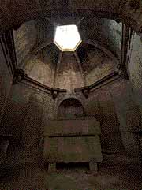

El fuego crepita alegremente en la chimenea, y los tonos rojos y dorados inundan tu visión. Es tu primer día y deberías estar preparándote para estudiar, pero notas que una esquina de un tapiz antiguo está extrañamente levantada, revelando una corriente de aire frío y oscuridad.
¿Decides ser un estudiante ejemplar y bajar a las mazmorras para tu Clase de Pociones, o prefieres dejarte llevar por la curiosidad e investigar el tapiz sospechoso antes de que alguien te vea?